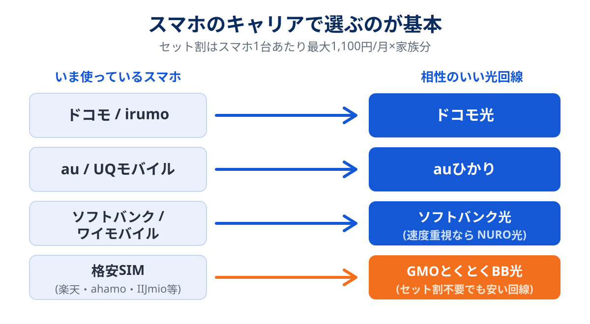

「光回線、種類が多すぎてどれを選べばいいのかわからない」——この記事は、そんな状態から自分に合う1社を決めるところまでを1本でカバーする比較ガイドです。
結論はシンプルで、光回線選びの9割は「スマホとのセット割」で決まります。まず答えを先に置いておきます。
ドコモユーザー → ドコモ光 / au・UQ → auひかり(エリア外ならビッグローブ光) / ソフトバンク・ワイモバイル → ソフトバンク光(速度重視ならNURO光) / 格安SIM・縛りが嫌い → GMOとくとくBB光。
迷ったら、家族のスマホが一番多いキャリアに合わせれば大きく失敗しません。理由と例外をこの後で説明します。
この比較の根拠(検証方法)
比較サイトを名乗る以上、順位の根拠は最初に示しておくべきだと思っています。この記事の評価は次の材料で作っています。
- 料金:各社公式サイトの掲載料金(税込)。キャンペーンの割引前の「素の月額」で比較
- 速度:ユーザー実測値の集計サイト「みんなのネット回線速度」の平均実測値を参考値として使用
- 使用経験:運営者自身がこれまで契約してきた回線の体験(詳細は運営者情報)
- 条件の細部:違約金・工事費・キャッシュバック条件は各社公式の記載を確認
なお、料金やキャンペーンは頻繁に変わります。この記事も更新を続けていますが、申し込み前には必ず公式サイトの最新条件を確認してください。
光回線の選び方は3ステップだけ
ステップ1:スマホのキャリアからセット割を確認する
大手の光回線は、スマホとセットで契約するとスマホ側の料金がずっと割引されます(1台あたり最大1,100円/月など)。家族の対象回線すべてに割引が乗るので、4人家族なら月4,000円を超えることも珍しくありません。ここが光回線選びの本丸です。

ステップ2:住まいのタイプとエリアを確認する
- 戸建て:基本的にどの回線も選べます。独自回線(auひかり・NURO光)はエリア検索を先に
- マンション:建物に導入済みの設備で選択肢が決まります。詳しくはマンション回線の記事で解説しています
ステップ3:速度がどれだけ必要か把握する
「なんとなく速そうだから」で高いプランを選ぶ必要はありません。用途別の必要速度はこの程度です。

- セット割対象の回線を第一候補にする
- マンションは「建物の対応状況」が先、戸建ては「エリア検索」が先
- 一般用途なら1Gbpsプランで十分。10Gはゲーマー・配信者向け
おすすめ7社の比較表
月額は割引適用前の基本料金(税込)、速度は「みんなのネット回線速度」の平均実測値を参考にした執筆時点の目安です。
| 回線名 | 月額(戸建て) | 月額(マンション) | 下り実測の目安 | セット割 | 総合評価 |
|---|---|---|---|---|---|
| ドコモ光 | 5,720円 | 4,400円 | 約270Mbps | ドコモ | ★★★★☆ |
| auひかり | 5,610円〜 | 4,180円〜 | 約500Mbps | au / UQ | ★★★★★ |
| ソフトバンク光 | 5,720円 | 4,180円 | 約300Mbps | SB / ワイモバ | ★★★★☆ |
| NURO光 | 5,200円(2ギガ) | 約580Mbps | ソフトバンク | ★★★★☆ | |
| GMOとくとくBB光 | 4,818円 | 3,773円 | 約330Mbps | なし(縛りなし) | ★★★★★ |
| ビッグローブ光 | 5,478円 | 4,378円 | 約290Mbps | au / UQ | ★★★★☆ |
| 楽天ひかり | 5,280円 | 4,180円 | 約250Mbps | 楽天(ポイント優遇) | ★★★☆☆ |
※ 実測値は時期・地域・建物で大きく変動します。あくまで比較の目安としてご覧ください。
タイプ別おすすめ7社の詳細レビュー
ドコモ光
NTTドコモ|フレッツ光回線(光コラボ)
| 月額(税込) | 戸建て 5,720円 / マンション 4,400円(1ギガ・タイプA) |
|---|---|
| セット割 | ドコモスマホ1台あたり最大1,100円/月 割引 |
| エリア | 全国(フレッツ網) |
ドコモスマホなら実質これ一択。家族のドコモ回線全部に割引が乗るため、家族が多いほど効きます。フレッツ網なので全国のマンション対応も広く、「選べない物件」がほぼ無いのも安心材料。プロバイダを選べるので、IPv6(IPoE)対応かつWi-Fiルーター無料レンタルのあるプロバイダを選ぶのがコツです。
- ドコモとのセット割は唯一
- エリア・対応物件が最大級
- dポイント還元の施策が多い
- 月額はやや高め
- プロバイダ選びで品質差が出る
- 混雑時間帯は速度が落ちる地域も
※ 申し込み前にキャッシュバックの受け取り条件をご確認ください
auひかり
KDDI|独自回線
| 月額(税込) | 戸建て 5,610円〜 / マンション 4,180円〜 |
|---|---|
| セット割 | au・UQモバイル 1台あたり最大1,100円/月 割引 |
| エリア | 独自回線(関西・東海の戸建て等は提供外。要エリア検索) |
NTT網を使わないKDDI独自回線なので、夜間の混雑に強いのが最大の武器。実測値の集計でも常に上位グループです。au・UQユーザーのセット割に加え、乗り換え時の違約金負担やキャッシュバックなどキャンペーンの厚さも目立ちます。弱点は提供エリアの制約だけ。エリア内なら本命候補です。
- 独自回線で速度・安定性が高い
- au/UQのセット割対象
- キャッシュバック水準が高い傾向
- 提供エリアに制約がある
- 解約時の撤去費が条件次第で発生
- マンションは建物対応の確認必須
ソフトバンク光
ソフトバンク|フレッツ光回線(光コラボ)
| 月額(税込) | 戸建て 5,720円 / マンション 4,180円 |
|---|---|
| セット割 | ソフトバンク最大1,100円/月・ワイモバイル最大1,650円/月 |
| エリア | 全国(フレッツ網) |
ソフトバンク・ワイモバイルユーザーの「おうち割 光セット」対象。特にワイモバイルは割引額が大きく、スマホ+光の合計で見ると強力です。他社解約時の違約金を負担するキャンペーンが手厚い傾向があり、乗り換えのハードルを下げてくれます。NURO光がエリア外だったときの受け皿としても定番です。
- ワイモバイルとの相性が抜群
- 違約金負担キャンペーンが手厚い
- 全国エリアで物件を選ばない
- セット割には指定オプション加入が必要
- 素の月額は安くはない
NURO光
ソニーネットワークコミュニケーションズ|独自回線
| 月額(税込) | 5,200円(2ギガ) |
|---|---|
| セット割 | ソフトバンク最大1,100円/月 |
| エリア | 限定的(北海道・関東・東海・関西・九州の一部など) |
標準プランで下り最大2Gbpsという速度特化の独自回線。実測集計でも最速クラスの常連で、オンラインゲームや動画配信をする人からの支持が厚いサービスです。注意点は、提供エリアが限られることと、宅内・屋外の2回の工事が必要で開通までに時間がかかりやすいこと。「今すぐ使いたい」人より「最高の環境をじっくり作りたい」人向けです。
- 実測速度は最速クラス
- 月額は速度の割に手頃
- ソフトバンクのセット割対象
- 提供エリアが狭い
- 開通まで1〜3ヶ月かかることも
- マンションは対応物件が少なめ
※ エリア外の場合はソフトバンク光が代替候補です
GMOとくとくBB光
GMOインターネットグループ|フレッツ光回線(光コラボ)
| 月額(税込) | 戸建て 4,818円 / マンション 3,773円 |
|---|---|
| セット割 | なし(その分、素の月額が安い) |
| エリア | 全国(フレッツ網)/ 契約縛り・解約違約金なし |
「スマホは格安SIMだからセット割は関係ない」という人の答えがこれ。大手より月1,000円前後安く、契約縛りも違約金もありません。v6プラス対応で速度も光コラボとして標準以上。私が家族にひとつだけ勧めるならこれです——理由は単純で、誰が使っても損になりにくい設計だから。キャッシュバックキャンペーンも定常的に実施されています。
- セット割なしで比較しても最安級
- 縛り・違約金なしで気楽
- v6プラス対応で夜も安定しやすい
- スマホセット割は無い
- サポートはオンライン中心
ビッグローブ光
ビッグローブ(KDDIグループ)|フレッツ光回線(光コラボ)
| 月額(税込) | 戸建て 5,478円 / マンション 4,378円 |
|---|---|
| セット割 | au・UQモバイル 1台あたり最大1,100円/月 割引 |
| エリア | 全国(フレッツ網) |
au・UQのセット割が使えるのにフレッツ網なので全国どこでも契約できるのが存在意義。「auひかりを引きたかったけどエリア外・建物非対応だった」という人の定番の受け皿です。KDDIグループの老舗プロバイダで、IPv6接続にも標準対応しています。
- au/UQセット割×全国エリアの組み合わせ
- 老舗プロバイダの安心感
- 速度はauひかりに一歩譲る
- キャンペーンの条件は都度確認を
楽天ひかり
楽天モバイル|フレッツ光回線(光コラボ)
| 月額(税込) | 戸建て 5,280円 / マンション 4,180円 |
|---|---|
| セット割 | 楽天モバイルとのセットで楽天市場のポイント倍率アップ等 |
| エリア | 全国(フレッツ網) |
割引というより楽天ポイントで返ってくるタイプの回線。楽天モバイルユーザー・楽天市場のヘビーユーザーなら、ポイント還元まで含めた実質負担で見ると悪くありません。逆に楽天経済圏を使っていない人には積極的な理由が薄いので、その場合はGMOとくとくBB光の方が向いています。
- 楽天ポイントとの相乗効果
- キャンペーン時の実質負担が軽い
- 現金値引きのセット割ではない
- Wi-Fiルーターは自前で用意
申し込み〜開通までの流れ
どの回線でも、大まかな流れは同じです。ポイントは「先に申し込み、開通を確認してから旧回線を解約」の順番を守ること。

工事の所要時間は1〜2時間程度で、立ち会いが必要です。フレッツ光・光コラボ間の乗り換え(転用・事業者変更)なら、工事なしの切り替えで済むケースが多く、もっと気軽です。詳しい手順とキャッシュバックの注意点は乗り換え完全ガイドにまとめました。
よくある失敗3つと回避策
失敗1:キャッシュバックを受け取り損ねる
「11ヶ月後に届くメールから手続き」のような条件を忘れて、数万円をもらい損ねるケースは本当に多いです。申し込んだその日に、受け取り手続きの日程をスマホのカレンダーに登録しておきましょう。
失敗2:不要オプションつきで申し込んでしまう
「キャッシュバック増額」の条件として映像サービスや電話オプションが付いてくる窓口があります。月額に直すといくら増えるのかを計算し、不要なら「オプションなし」の条件の金額で比較してください。
失敗3:マンションの設備を確認せず申し込む
マンションの場合、建物の配線方式によっては期待した速度が出ません。申し込み前に建物の対応状況を確認するか、マンション回線の記事で対処法をチェックしてから決めましょう。
よくある質問
どこで申し込むのが一番お得ですか?
マンションと戸建てで選び方は変わりますか?
開通までどれくらいかかりますか?
契約の縛りが嫌なのですが。
実測速度はどうやって調べればいいですか?
まとめ:スマホから逆算すれば失敗しない
- 光回線選びの9割はスマホのセット割で決まる
- ドコモ→ドコモ光 / au・UQ→auひかり / SB・ワイモバ→ソフトバンク光orNURO光
- 格安SIM派・縛りが嫌ならGMOとくとくBB光
- 申し込みは「新規が先、解約は開通後」。キャッシュバック条件はその日にメモ
- 各社公式サイトの料金・キャンペーンページ(2026年8月確認)
- みんなのネット回線速度(ユーザー実測値の集計)
- 総務省「電気通信サービスの契約数及びシェアに関する四半期データ」